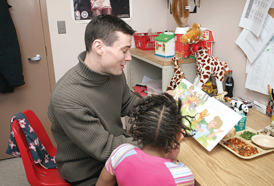

Agency of The Month
It started 127 years ago when the Daughters of Charity, an order of Roman Catholic nuns, purchased the Schuyler Mansion in Albany to create an orphanage for sick children. St. Catherine’s Center for Children evolved and now operates a child welfare program that includes a 25-bed group residence, a group home for eight additional children and a therapeutic foster boarding home program that provides care for 50 children. Read More